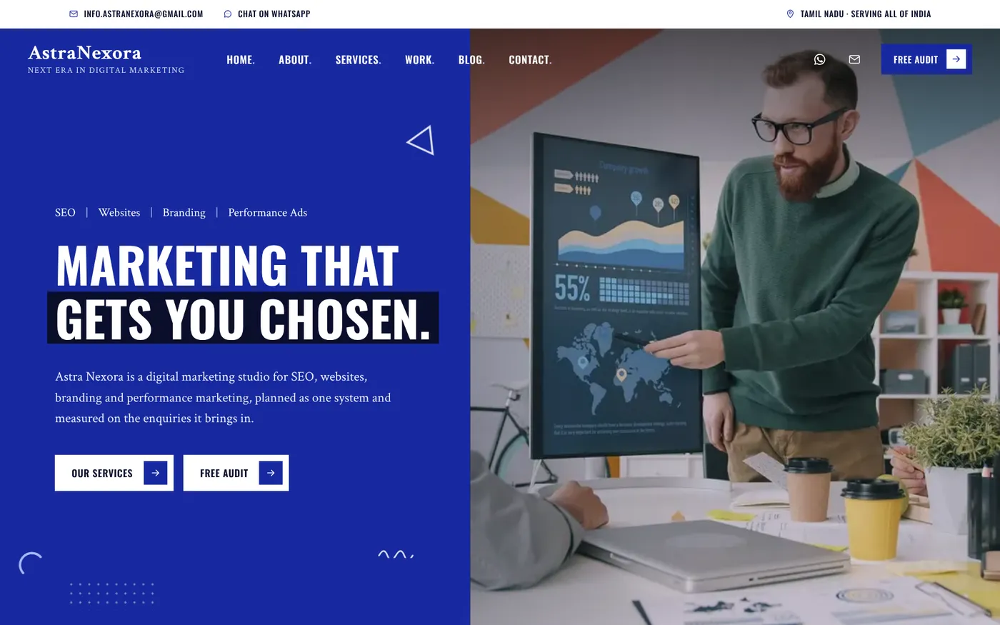
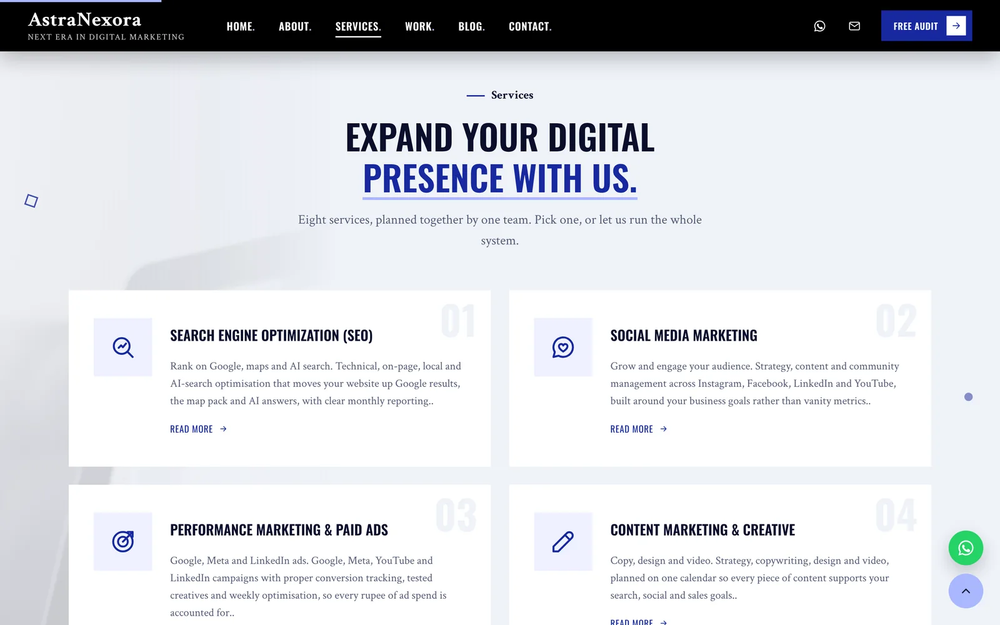
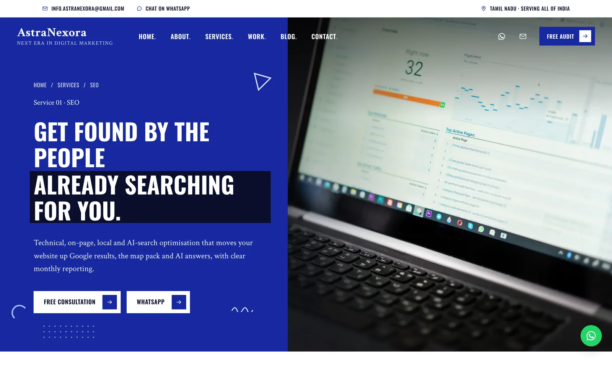
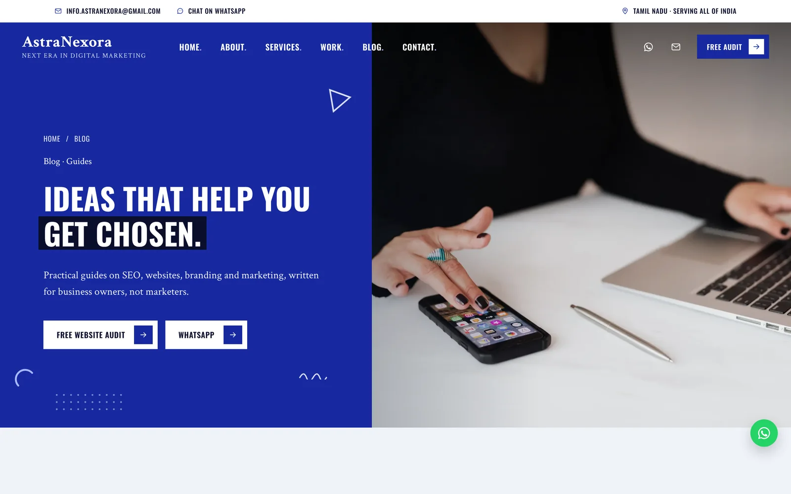
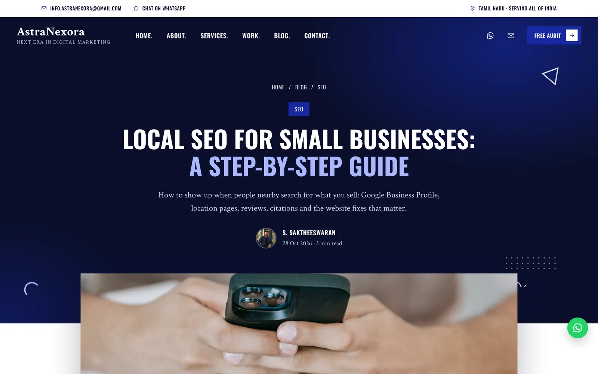
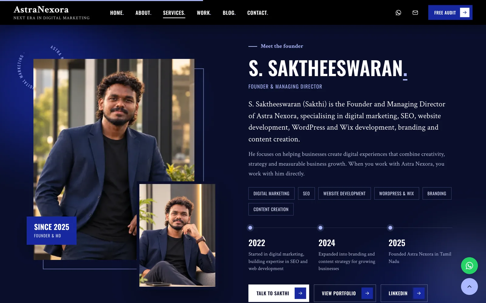
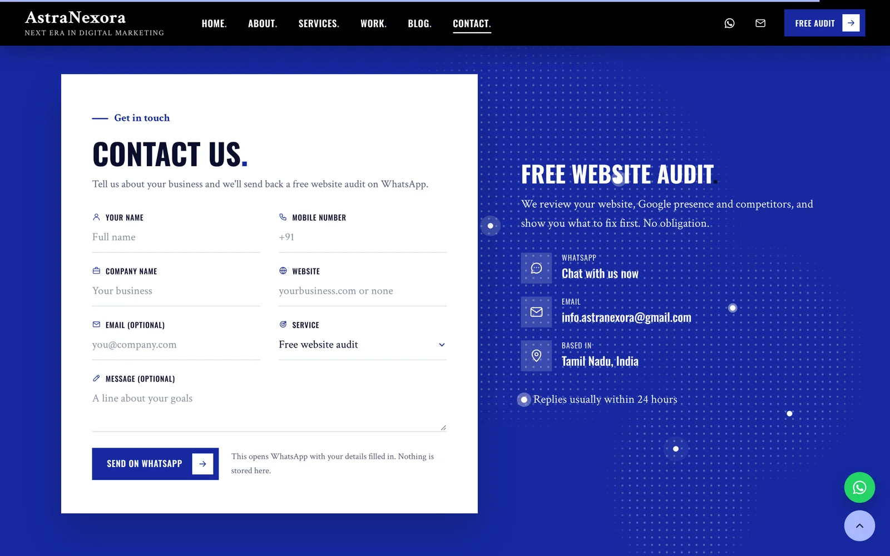
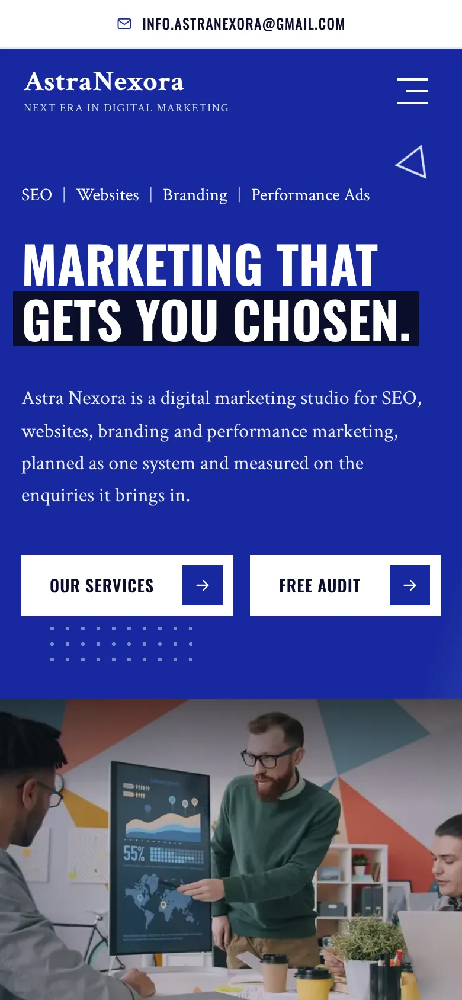

Astra Nexora – Agency Website
A fast, SEO-ready agency website with service pages, a blog and a WhatsApp enquiry form.

- The problem
A new agency needed a credible online home that explains eight services and turns visitors into enquiries.
- The solution
A fast custom website with a page per service, an SEO blog, a free audit offer and WhatsApp as the contact channel.
- The result
A live, indexed agency website with 8 service pages, a blog and an enquiry form that opens WhatsApp.
01The challenge
Astra Nexora is my own agency, founded in 2025. A new agency has no reputation yet, so the website has to do the convincing: explain clearly what we do, look as professional as established agencies, and give a visitor a simple, low-risk first step.
Template sites are slow and look like everyone else's, and fake case studies destroy trust the moment someone checks them. The site had to be fast, original and honest.
02My approach
One page for each of the eight services, so each can rank for its own searches and answer one question well. Honest concept projects instead of invented client results. A free website audit as the main offer, because it's easy to say yes to. And WhatsApp as the main contact channel, because that's where Indian business owners already are.
SEO was planned from the start: structured data, a sitemap, a blog with practical guides, and both Google Search Console and Bing Webmaster Tools set up on day one.
The solution, step by step
Eight service pages
Every service (SEO, social media, ads, content, websites, branding, email and AI automation) has its own page with what's included, the process, FAQs and a clear call to action.


A blog that brings in search traffic
Practical guides on local SEO, Google Business Profile, website audits, SEO vs ads and AI search, each with key takeaways, FAQs and article schema.


A founder section that builds trust
People buy from people. The founder section introduces who runs the agency, with a short timeline and links to my portfolio and LinkedIn.

Free audit + WhatsApp enquiry form
The contact form collects the business details and opens WhatsApp with everything filled in, so the enquiry arrives in one message and nothing is stored on a server.


What changed
- Live at astranexora.netlify.app with 8 service pages, project pages and a blog
- Structured data, sitemap, Google Search Console and Bing submission in place
- Every enquiry arrives on WhatsApp with the visitor's details filled in
- Fast custom build with smooth scroll animations, deployed on Netlify